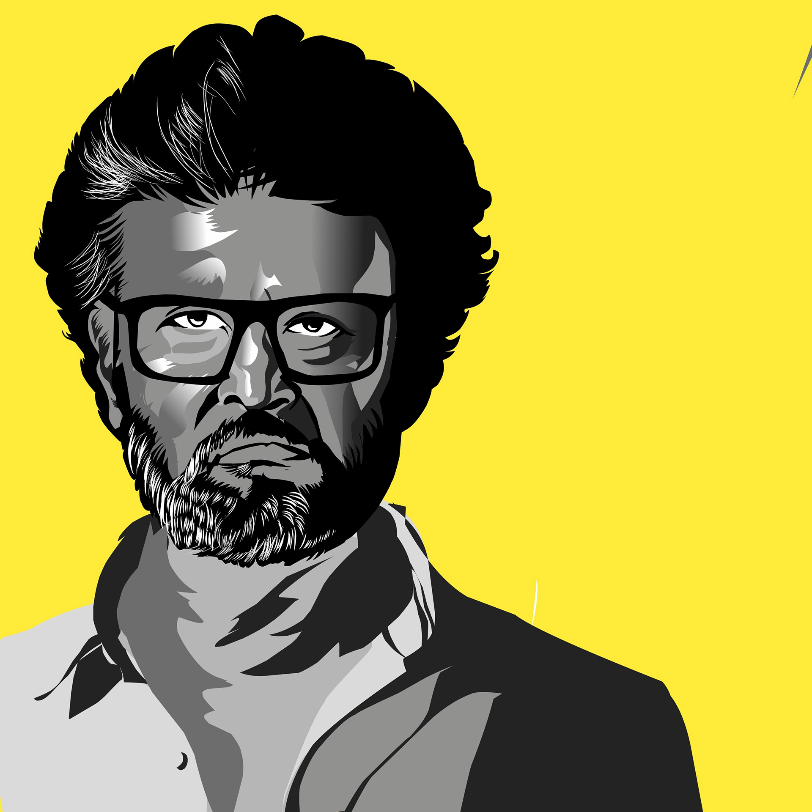
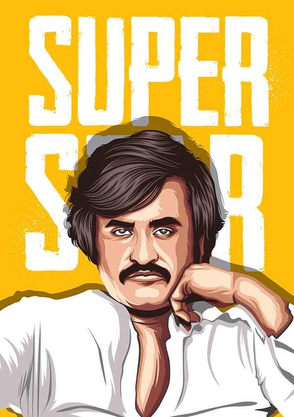

Shivaji Rao Gaekwad, fondly known as Rajinikanth, is an Indian actor who works primarily in Tamil cinema. Besides acting, he has produced some movies too.
Biography

Shivaji Rao Gaekwad, fondly known as Rajinikanth, is an Indian actor who works primarily in Tamil cinema. Besides acting, he has produced some movies too. Before entering a career in films, Rajinikanth had pursued all odd jobs, which includes one as a coolie and a bus conductor in Bangalore, and acted in many Kannada plays as well.
He never looked back after his debut with the great K Balachander's directorial flick Apoorva Raagangal. He has won awards and accolades for his illustrious career in films, which include Film Fare, Tamil Nadu State Awards, and National Awards. He has also been awarded the Padma Shree, Padma Bhushan, and Padma Vibhushan, the highest citizen award in India. Rajinikanth enjoys a crazy fan following down south and is highly popular in Hindi cinema. Rajinikanth has been giving hints about his political interest at times and many political parties have tried to lure him. The political battlefield is still to witness the heroics of the South superstar.
Sandeep Jain An IIT Roorkee alumnus
and founder of GeeksforGeeks. He
loves to solve programming problems
in most efficient ways. Apart from
GeeksforGeeks, he has worked with
DE Shaw and Co. as a software
developer and JIIT Noida as an
assistant professor.
Rajinikanth Personal Life
FULL NAME
RAJINIKANTH
Date of Birth
12 Dec 1950 (Age 73)
Place of Birth
Bangalore, Mysore State present-day Karnataka, India
Education
Diploma in acting from Madras Film Institute
Profession
Actor
Father's Name
Ramoji Rao Gaekwad
Mother's Name
Jijabai
Spouse's Name
Latha Rajinikanth
Children
2 Daughter(s)

Rajinikanth Net Worth
Net Worth:
₹430 CRORE
ASSETS:
₹430 CRORE
Liabilities:
N/A
Interesting Facts about Rajinikanth
Before entering into Cinema Rajinikanth worked as a Conductor in Bangalore
Real name of Rajinikanth is Shivaji Rao Gaekwad.
Rajinikanth is the only Indian actor to be featured in the Central Board of Secondary Education school book, in a lesson titled From Bus Conductor to Superstar.
From 2000-2010 with an acting fee of ₹ 26 crores, He was the 2nd highest-paid actor in Asia after Jackie Chan. Rajinikanth is considered the superstar of Indian cinema with a huge fan following.
He is a strong follower of Baba. He believes in spirituality.
Rajinikanth's daughter Aishwarya is married to actor Dhanush.
Political Timeline of Rajinikanth
2020
On 29 December 2020, Rajinikanth withdrew his decision of launching a political party. In an open letter to his fans and the people of Tamil Nadu, the superstar apologized and said that he would never enter politics.
2020
>On 3 December 2020, Rajinikanth announced that he officially enter into politics on December 31, 2020.
2017
After years of waiting, On 31 December 2017, Rajinikanth announced that he will enter into politics before Tamil Nadu Assembly Election 2021.
2004
He said that he would personally vote for BJP, but he wouldn't support any alliance in the parliamentary election held in the same year.
1996
Rajinikanth had made a groundbreaking statement that if J. Jayalalitha comes to power even God can not save Tamil Nadu. His statement resulted in the ouster of AIADMK from the TN government and DMK took over the reign.
Rajinikanth early life
1975
Rajinikanth made his debut in the Tamil film industry which also starred Kamal Haasan and Srividya. Directed by Balachandar. The same year he played a minor role in Katha Sangama, a Kannada Movie.
1950
Born on 12 December 1950 to a Marathi family in Bangalore, Rajini faced many hardships while growing up. To support his family, he did all kinds of jobs including that of a coolie and a bus conductor.
Rajinikanth Achievements
1984 Filmfare Best Tamil Actor Award for Nallavanukku Nallavan movie
1978, 1982, 1995, 1999, 2005, and 2007 Rajinikanth got Tamil Nadu State Film Award for Mullum Malarum, Moondru Mugam, Muthu, Padayappa, Chandramukhi, Sivaji respectively.
1984 Kalaimamani - Contibution to Tamil film industry
2000 Padma Bhushan
2016 Padma Vibhushan